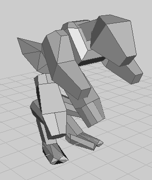

OTAR-EVAMP

|
This page contains outdated information, but is kept for historical reasons. |
Space is Big... really Big
Andromeda Wars (Possible Title)
Before our world had even cooled, a dire threat faced the thousand races’ that inhabited the outer edge of the galactic core. The Core, the massive bejeweled cloud of energy that was the center of our galaxy, had begun a fatal climax to a million year old countdown. The stars of the Core are much closer together then the outer arm’s, and this allowed Slower then light travel ship’s to reach other star’s in only a year, or at best a few month’s.
{kind=link}

The Galactic Senate formed and ruled semi-peacefully for thousand’s of year’s. Empire’s grew and faded, and the Core seemed to last forever. However the energy coming off each star fed into the others, making the Core a hot bed of radiation. Race’s that didn’t cope, died out, but most survived and continued on with the status co. The stars though, they began to age faster, burning there hydrogen at an increased rate.
One by one the star’s began to supernova, and these massive energy’s caused other star’s to supernova as well, creating a crescendo of energy that wiped out the Core in one massive, slow motion explosion. The race’s panicked, but bogged down by bureaucracy and bickering, no major evacuations took place. Some race’s escaped in tiny ramjet ships, but most where consumed by the deadly wave of gamma radiation that spilled form the Core.
The outer race’s, the ones that weren’t powerful enough, economically or politically, to force there way into the rich hot bed of the Core, saw the holocaust that consumed thousand’s of race’s. The charismatic leader of a race known as the J’okall took quick control of the Outer Senate and organized a massive exodus, before the wave of Gamma radiation overcame them. It took fifty year’s, and they lost many of the inner race’s, but the majority of the Arm sector escaped.
The Arm sector was facing towards the third arm of the galaxy, the races of the other two Arm sector’s have never been contacted by this one. There fate was never found, and the fleeing race’s didn’t care enough to send scout’s around the cloud of radiation.
Even though the Exodus Fleet, or the EF, was using ramjets and flying at demi-light-speed, the Core Explosion still gained. As thing’s looked grim, a amazing mind from a race of famed thinkers found the secret of hyperspace, and how to travel faster then light. The EF suddenly started to gain ground, and headed outwards, towards the Cloud of Magellan, and possible to Andromeda. Where ever they needed to go.
The EF formed a police force the keep malcontent’s under control, and called them the Guardian’s. Only a few minor wars occurred, and some race’s where confined into radio silence, forbidden to leave there World-Ship. Those ships, named the Outcast’s, clustered around the network of ships of the EF. Some ships exploded like miniature sun’s, fusion bomb’s strapped to there hull set off. Million’s perished as the Guardians kept the peace.
A minor scuffle happened at the outer edge of the Galactic Arm. It involved a race of semi-evolved, but very stubborn and pugnacious, apes. They joined up with the fleet after a minor war. When they saw the explosion shining through the dust cloud’s near the center of the galaxy, the negotiation’s where quickly over. The humans stuck to the dank subsections of the most charitable race in the EF, the Shofixti. The human’s, pushed to new level’s of xenophobia and general anti alienisms, sulked and plotted.
The Shofixti simply shock there head and subdued the human uprising’s with as little violence as possible. After a few centuries, after the EF had cleared the edge of the Galaxy, the humans and the Shofixti had grown so used to each other, that they barley noticed any difference between them. Aside form the fact that the human’s had a amazing lack of gill’s, stinkers or compound eye’s.
The EF has been running now, fleeing between the fast gulf between the Milky Way and Andromeda, for exactly twenty nine thousand years.
The EF had blended together each race trying to keep the massive World-Ship’s from failing, and the FTL Engine’s working at a constant pace. Once they cleared the official “death zone�? where the gamma radiation had lowered to a acceptable limit. The EF kept going though, fore they had already reached the great gull between the Galaxy’s. It was a feeling that the older race’s and there eldest could describe well. A feeling of deep chill.
No star’s, no nearby planets, black hole’s, quasars, pulsars or neutron star’s.. Nothing but a massive empty, filled only with clouds of gas’s and partials. The World-Ship’s plowed on, towards the bright promise land of Andromeda. The most sophisticate instruments the EF used showed that the Andromeda galaxy was not exploding, and had not done so in the past million years.
Once the EF reached the edge of Andromeda, a massive celebration occurred. The three largest World-Ships, called the Ark’s by the more poetic humans where literally lashed together and everyone, even the sullen outcast’s where gathered together. The Outcast’s had actually forgotten that their ships were ships, and where shocked when they where taken outside in large shuttles. Even so, the Outsider’s didn’t dull the party.
The corpse of the many hero’s of the EF, ranging from the inventor of FTL, the First Leader and the hero of the tenth war, Ke<click>Jaw<snap>. He was called Key by most none insectoid race’s. The party ended after a couple month’s, and the EF started to search for habitably planet’s in the outer rim of the Galaxy. For some reason no one thought that anyone would dispute the EF. The universe is too massive to fight over land? Right?
When the EF first met the Xenos, they thought that they where literally minerals, as the Xenos don’t build much, and generally sit around in nutrient baths. So as the EF mining crew began to slowly process the complex silicon crystals to create much needed computer chips, the Xenos had to experience being vivisected over many long months. The local Psionic of the Xeno colony was the last to be mined, and had already felt the pain of it’s friends being slowly torn apart. It never occurred to the Xenos that the intruders couldn’t speak with Psi abilities, and so the EF never learned of the atrocity they where committing.
The Psionic sent its pain and the pain of its fellows to the nearest Xeno colony, and then the Psionic there sent the message along a long chain of Psionic relays to the Xeno Home world. Incensed, the Xenos began to plot there counter attack….
Xeno Units and Buildings
===Commander:=== The Xeno commander is slow, but equipped with a stolen advanced Nanolather, it can build a entire Xeno colony with ease. Its amazing Psi ability, the Destabilizer, can blow apart the molecules of a single enemy unit causing instant death. Its weaker Psi blast can fend of lighter enemy incursions, while the Destabilizer can handle the larger EF units.
Xeno Buildings, Lvl 1
- Mine: This small structure burro’s into the natural deposit’s of mineral’s in the planet, and using sophisticated Xeno tech, transport’s the refined material the nearest storage facility.
- Solar Power Plant: Using a plantlike symbiotic, a Xeno chooses to become one with this plant, and as such can generate power through photosynthesis. The Xeno protects the plant by brining up crystalline shields.
- Nutrient Bath: A small bath, filled with nutritive fluids. Creates Xeno’s, from Tankers to the small, agile Flyers. The Xeno’s have two buildings for creating unit’s, but can only build slowly. They have less air craft and navel vehicle’s, and are limited tactically as such .They make up for it with there incredibly strong (and slow) infantry.
Xeno Tanks, lvl 1
- PsiTanker: A small crystal that has adapted some of the EF’s ideas. Uses Psionic powers to levitate, Has a Blaster. Cheapish
- PsiBuilder: A levitating builder unit
- PsiScout: Cheap, fast, with a very weak blaster
- PsiShard: Xeno version of Missile tanks. Use’s a tracker shard
Xeno Infantry, Lvl 1
- Xeno: Basic Xeno infantry, more powerful then EF version. Uses a Shard, non tracking
- Psicadet: A psychic in training, which can take centuries, given the Xeno’s slow life time. Use’s a Psi Blast
- Shard: The walking version of the PsiShard, without the tracking
- Spy: The fastest Xeno in the game (which isn’t saying much) the Spy has one advantage over the EF scout. Psionic invisibility, which clouds the enemy’s minds. Can still be detected and shot by radar. Unarmed
- Constructor: Infantry builder, capable of scaling mountain’s better then a Psibuilder.
Xeno Planes, Lvl 1
- Flyer: Scout, fast, equipped with a Shard. What can I say?
- Fighter: Using a Blaster and two shards’, this plane stay’s in the air with the help of two motorized fan’s stolen from a EF 9340-X “Brawler�? class gunship.
- Bomber: Using a strap on rocket of Xeno design, the Bomber never really expects to return from combat. It has a Ray, and can be devastating when (if) it make’s a pass.
- Floating Nutrient Bath: Using a energy net created by the Psychic building the ships, the nutrients are held in a concentrated area of the ocean. Builds the Xeno Ship’s.
Xeno Ships, Lvl 1
- Ship: The Xeno all purpose ship is a jack of all trade’s, but the master of none. With a shard, blaster and Psionic radar, the Ship can be out maneuvered in any way by a specialized ship of the EF. But it is adaptable, and that has something going for it!
- ShipBuilder: name say’s it all!
- GeoPowerplant: Its called the Death by Ecstasy, by most Xeno’s. The GeoPowerplant is a Xeno that has given its life willingly to supply power to the war machine required to fight the EF. The Ecstasy comes form the pure electricity that flow’s out of the Xeno’s body, stimulating the pleasure compound of the Xeno’s brain. The Xeno slowly becomes nothing more then a building, immobile and not interested in anything other then the ecstasy that flows through its body.
- Blaster Tower: Named by the EF, who have learned to hate this squat crystal. Basically a Blaster linked to a power node, giving it unprecedented power.
- Psiradar: A Psionic sits in this amplifying tower, drawing energy from a nutrient bath. It use’s its thoughts to detect the enemy, and single H.Q The Tower itself though… its pitifully weak and is blow apart by even small arm’s fire.
- Wall: Well… aside from being cool, purple and crystal like, do I need to say anything else?
Xeno Arsenal
Xeno Weapons:
Energy:
- Blaster: Basically a organically grown superconductor that builds charge until it unless a massive wave of energy, blasting enemy units to pieces.
- Ray: Using naturally grown parabolic mirror’s to bounce a ray of bioluminescent light back and forth, adding power until it fire’s off a ray of intense heat. Most deadly Energy weapon, akin to a Annihilator, but it’s beam is invisible, making the weapon harder to spot.
- Discord: Building up a incredible charge in there own body’s, this Xeno can blow themselves to smithereens. The weapon crate’s heat, and its nicknamed the “Harbormaker�? by the EF.
Kinetic:
- Shard: A cannibalistic weapon that cut’s into eh Xeno’s own body, creating lethal silicon shards. A cluster of Nano bot’s are inserted into the shard, sharpening the disc into a molecule thin edge. This allows the Shard to cut through almost any amour. Use’s metal and energy to fire.
- Psionic (The Xeno’s mind-structure is so inexplicably bizarre that the EF has not been able to figure out how the Xeno’s accomplish these feat’s. It seam’s apparent that the Xeno body’s can focused energy wave’s, and there mind’s can direct them consciously)
- Nuke: The Human’s dredged this archaic term up from there database’s. It seems fitting enough. A ancient Xeno, sitting in a nutrient bath, had a mind so advanced that it can create what has now become feared through out the EF. The Nuke is literally a globule of matter, held together by a unknown energy, and once it impacts on the ground, the energy feed’s into the plasma, compressing it into Nutronium. Nutronium is the densest matter in the known universe, and this ball of Nutronium will level a large area of the planet before falling apart, due to structural instability’s.
- Shock: This Xeno weapon is a sniper rifle. Using a massive amount of energy, it fire’s a lethal burst of gamma radiation in a beam so focused it can burn a hole through an enemy. If the target survives, it’s nervous system will literally fall apart as sever radiation sickness take’s hold.
- Psi Blast: Using anger built up by the war with the EF, a Xeno Psychic can literally liquefy a humanoid, reptiloid and intelligent walking treeoid brain.
EF Units and Buildings
EF Commander
The C&C of the EF attack forces. Capable of creating a forward ops base and an entire army, this formidable battle suit is directly linked to a orbiting World-Ship. Equipped with the top secret weapon, the Punch-Gun, the commander can literally tear molecules apart in a straight line, destroying anything unlucky enough to be in the way. Unfortunately this bulky gun leaves room for only a light laser.
- Mine: used to… mine minerals
- Wind Power: the EF has long known the best way’s of getting every last bit of energy out of every last source possible. They leave NO source untapped, and so the Shofixti built theses oversized windmills.
- Solar Power: A twenty sided die, stuck on a stick with a hole under the ground, as one Gary Gigax said. He had recently (re)invented a popular board game, saying that he had found it in his great to the tenth power grandfather suitcase. The power generator drops into the hole when coming under fire, like an Ambusher.
- GeoPowerplant: This massive cylinder houses hyper advanced fan’s, spun by the gasses coming out of the planet. Creates power, and comes with a small capacitors to hold some extra energy.
Aircraft Plant
Builds aircraft manned by the Insectoids that have far far FAR better reactions then most race’s, making them perfect for fast paced air combat
- TX-99 Sneak: “Adorable�? is another name for this sickeningly cute plane. Fortunately, only the pilots, the Insectoids, call these plans as such. Looks like a small hexagon with multiple hover generators stuck on landing gear that looks like spider legs.
- TX-100 Bulldog: The best bet for early air combat. Equipped with a simple laser and two gavetic missiles (really just a cool name for a regular missile that implode rather then explode)
- TY-Con Builder Plane: Using a mico-nanolather to construct buildings, this plane can reach had to reach place’s of the map and builds.
- TX-990 Thumper: A minelayer plane. Insane? NO! Drops modified Thwumper bombs. They explode in the air, spraying light laser fire all over the area. Weakens and destroys enemy building and units.
Infantry Beamer
Using a slow motion transporter (Fast one’s cause deadly radiation to flood the area) the Beamer plants infantry on the ground from the orbiting World-Ship. The infantry comes from the Sjakar and the Humans, both fast breeding, violent and good at infantry combat. A old human with a perchance for ancient military organizations brought the term “Marine�? back into use.
- M.I: The M.I’s (Mobile Infantry) are power armored troops, each equipped with a small laser, micro com unit and a huge amount of guts. Basic trooper, with a small laser
- Marauder: This lizardman is capable of handling the increased work lode that comes with the Marauder suits. With extra speed, maneuverability and some odd seat designs, the Marauder is the speedy scout of the EF. Comes with a large sight range and a light laser.
- A.T.I: Slower then the other infantry suits, the ATI is a Anti Tank Infantry unit capable of firing a sonic warhead. The warhead price’s the inner part of the tank then blasts a sonic warhead inside the confined space of the tank. Unfortunately, the warhead has yet to be modified to fit the biology of the Xeno’s, and is not a one hit kill.
- ConBot: The ConBot is a endearing, if slow, weak and dumb robot. Every one at the base always likes to see theses bot’s trundle around building and repairing. Can build buildings, go all over most terrain’s but it’s not as speedy as the other builder units.
- A.I: The first ever Artificial Intelligence infantry. Dirt cheap, equipped with weak A.A missiles and fast, the A.I bot’s are useful for early raids and air protection.
- Thumper: Firing light mortars, this antique was used only one before, in the conquest of earth. Many humans drive theses, because after San Diego was leveled by them, the hairless apes gained a grudging respect for theses light artillery units. Equipped with a plasma gun.
Tank Factory
Building tank’s on planet is easer then beaming them from World-Ships. So this is ACTUALLY a factory, building with advanced nanolathers. All EF tank’s are hovers, because A: Its cooler and B: They are more flexible
- GV-90 “Pod�?: This small converted hover car literally has a light laser strapped to the front. Its best use is in scouting and mass raids.
- GV-892 “Zippy�?: This hover bike has two riders and a missile launcher on the back. The missile’s are automated, and the second driver fire’s two pitifully weak laser pistols. Zippys serve better as AA platforms then anti tank’s, but the pistols do look cool! .The Zippers are often considered insane by most males of most races. The females however…
- GV-920 “Bulldozer�?: This hover tank has some medium amour and a Kinetic wave gun. Great tank of the line, but will not stand up to more deadly Xeno weapons.
- CV-1.0 “Hover Con�?: This tanks has a advanced nanolather, and a insanely brave pilot. Most CV’s have pilots that will willingly drive into heavy laser fire just reclaim some smoldering wreckage, so maybe its just idiocy rather bravery.
Other Buildings
- Laser Tower: A Tower with a laser hooked to a continuous power source.
- Wall: A nice wall to protect your towers. Doesn’t look like crystals though…
- Laser Wall: A better wall that unfortunately sucks up more power then the other verity, making it more expensive. It can’t be run over by larger tank’s, and is harder to damage.
EF Arsenal: (As posted By SinbadEV)
Kinetic
- Kinetic Wave Gun: Pushes Stuff and causes projectile damage, but also to the insides of stuff.
- Kinetic Bomb: Thwumper: Goes off in the air and squishes stuff from the top
- Gravity Pointer: Build 3 stations to "triangulate a target", anything withing the triangle formed by this can be cause to implode.
- Gravity Mines: temporaily increases the "mass" of an area, slowing movement and doing slow but constant damage to anything trapped in it's field.
Magnetic
- Field disruptor/EMP: Used on a specifically engineered "mechanical only" attack with only physical/projectile weapons, disrupts the functioning of close ranged units.
- Clumper Mine: magnetizes the metal in a group of units, these units will constantly be atracted to eachother but remain functional.
Phase(matter state)
- Disruptor: Causes Atoms to randomly shift and ionize, causing enemies to simply become useless blobs of random goo.
- Destabalizer: Causes Atoms to become unstable and will eventually go critical and then nuclear.
- Shifter: Causes units to slip out of phase with the rest of the world (non moving stuff like ground will stop them because it's more "permanent" or something), will eventually come back into phase... useful as a weapon to temporarily "displace" defences, a defense to shift out factories and resource facilities, or as an attack to get behind enemy lines... also phasing projectiles can be shot "through" armor doing direct damage to the inards of units.
- Atoomizer(Atomizer): Causes atoms to stop bonding together and into molecules and disapate.
Photonic
- Solid Light: "Highlighter": simply caused natural light to have more mass and begin pummeling a target.
- Infra-red and Ultra-Violet "Lazers": Invisible and passing through shields targetting normal lazers.
Heat/Cold
- Flashpointer: Causes a target to uncontrollably absorb heat, freezing surrounding units and flash boiling even metal...
More on the Second and Third Tier weapons later. Stay tuned! Will you be the land grabbing EF or the hostile, alien Xenos?
---
NOTE BY GUESSMYNAME: This was orignally supposed to be a Remake of TA (Hence the title) but Zoombie managed to both change it completely and shanghi me into making it.
The orignial idea was to just make TA without any copyright-based issues. To be honest, i prefered the original idea, so Zoombie's version has about as much chance of getting off the ground as a very large rock, unless he plans to make it himself (which I doubt). I've chosen to help the SYs make new and improved unit models: http://taspring.clan-sy.com/phpbb/viewtopic.php?t=2063
Back to Mods